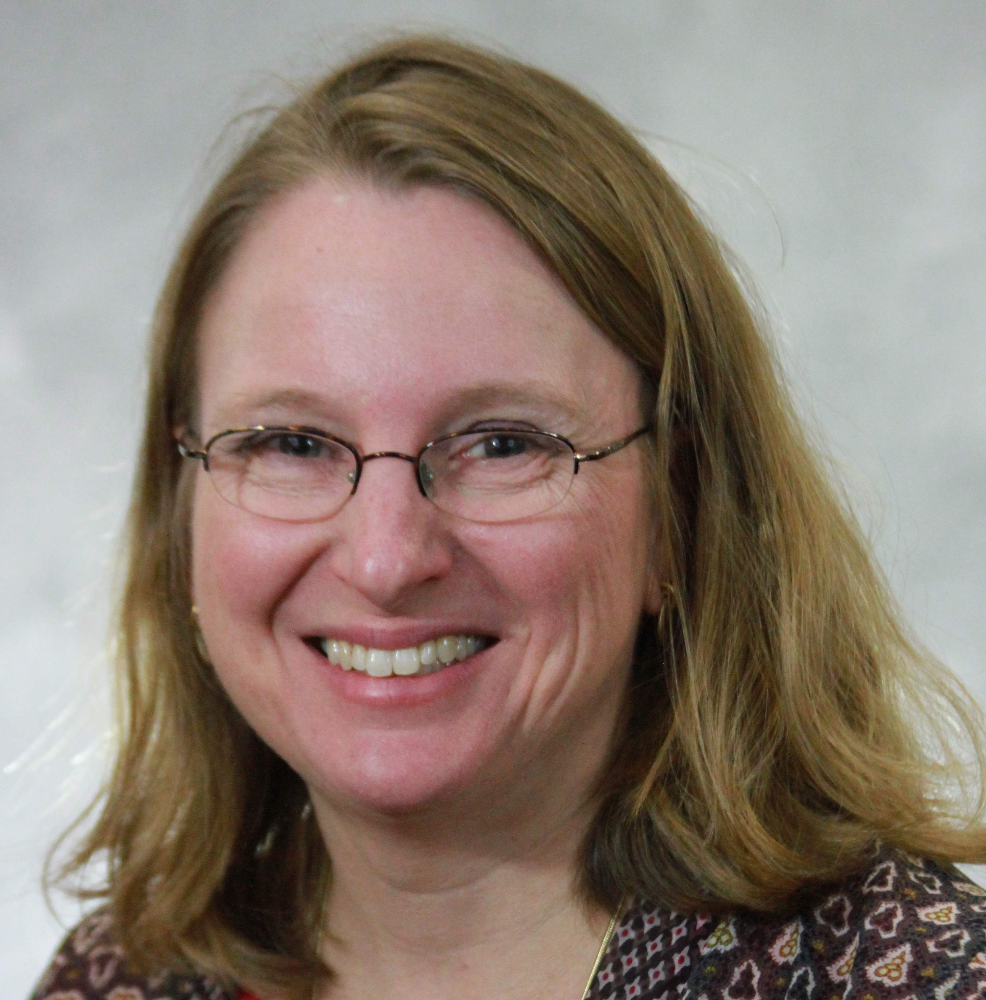
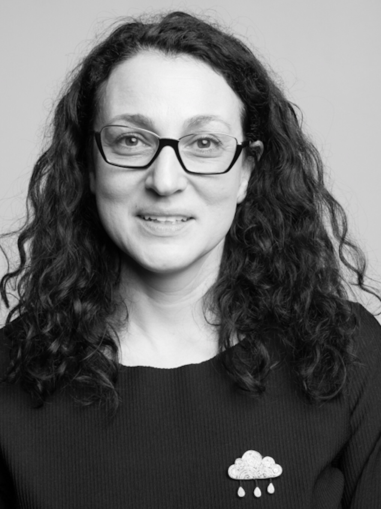

DataEd 2022 Program
DataEd will be held in conjunction with SIGMOD 2022, June 17, Philadelphia, PA, USA.
DataEd will be a full day workshop consisting of Keynote Talks, Paper Presentations, an Industry Panel, and a Poster session.
We are thrilled to have as our keynote speakers Kathi Fisler (Brown University) and Julia Stoyanovich (NYU).
An exciting panel discussion on industry perspectives on education and training for emerging roles in data will be organized by Juan Sequeda (data.world).
Detailed program to be announced.
Keynotes
Kathi Fisler
Data-Centricity: Rethinking Introductory Computing to Support Data ScienceOn a growing number of campuses, data science programs offer introductory courses that include a non-trivial amount of programming. The content of such courses overlaps that of traditional computer science introductory courses, but neither course subsumes the other. This talk argues that a common introductory course that covers both data science and data structures supports students and provides curricular flexibility, while also bringing social impacts of computing into the early curriculum. We'll discuss both the design and implementation of such a course, with particular focus on programming language features that support it.
Bio: Kathi Fisler is Research Professor and Director of Undergraduate Studies in Computer Science at Brown University. For the past several years, she and collaborator Shriram Krishnamurthi have been developing a course, textbook, and research program around data-centric computing. This modern take on introductory CS combines data science, data structures, and socially-responsible computing in a single curriculum accessible to majors and non-majors alike. She has also been a faculty lead in Brown's department-wide effort to weave social-responsibility across their CS curriculum. Both efforts draw on inspirations from her prior research in formal methods, software security, and computing education.
Julia Stoyanovich
Bio: Julia Stoyanovich is an Institute Associate Professor of Computer Science & Engineering at the Tandon School of Engineering, Associate Professor of Data Science at the Center for Data Science, and Director of the Center for Responsible AI at New York University (NYU). Her research focuses on responsible data management and analysis: on operationalizing fairness, diversity, transparency, and data protection in all stages of the data science lifecycle. She established the "Data, Responsibly" consortium and served on the New York City Automated Decision Systems Task Force, by mayoral appointment. Julia developed and has been teaching courses on Responsible Data Science at NYU, and is a co-creator of an award-winning comic book series on this topic. In addition to data ethics, Julia works on the management and analysis of preference and voting data, and on querying large evolving graphs. She holds M.S. and Ph.D. degrees in Computer Science from Columbia University, and a B.S. in Computer Science and in Mathematics & Statistics from the University of Massachusetts at Amherst. She is a recipient of an NSF CAREER award and a Senior Member of the ACM.